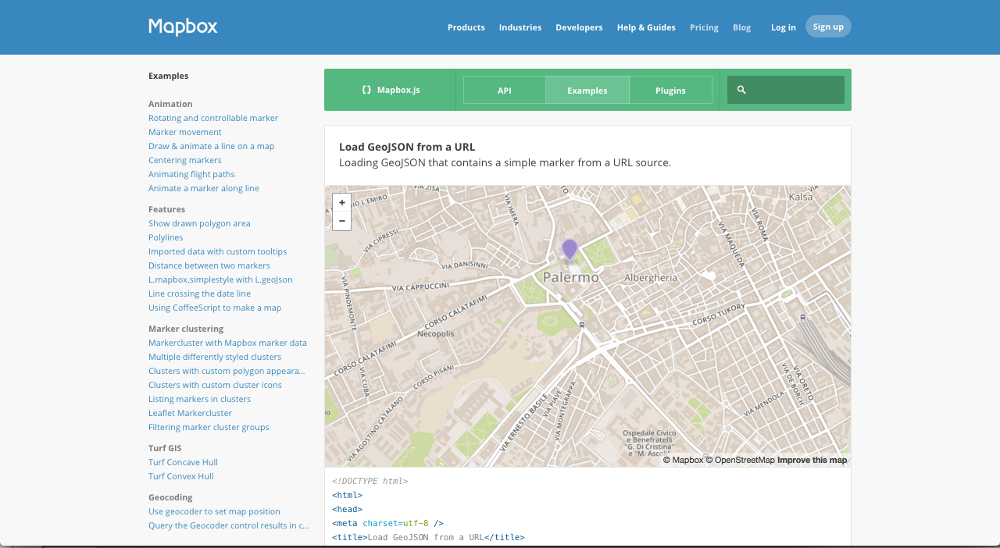
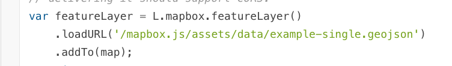
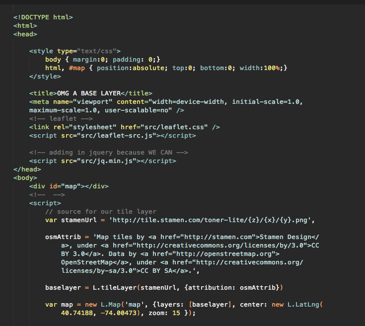
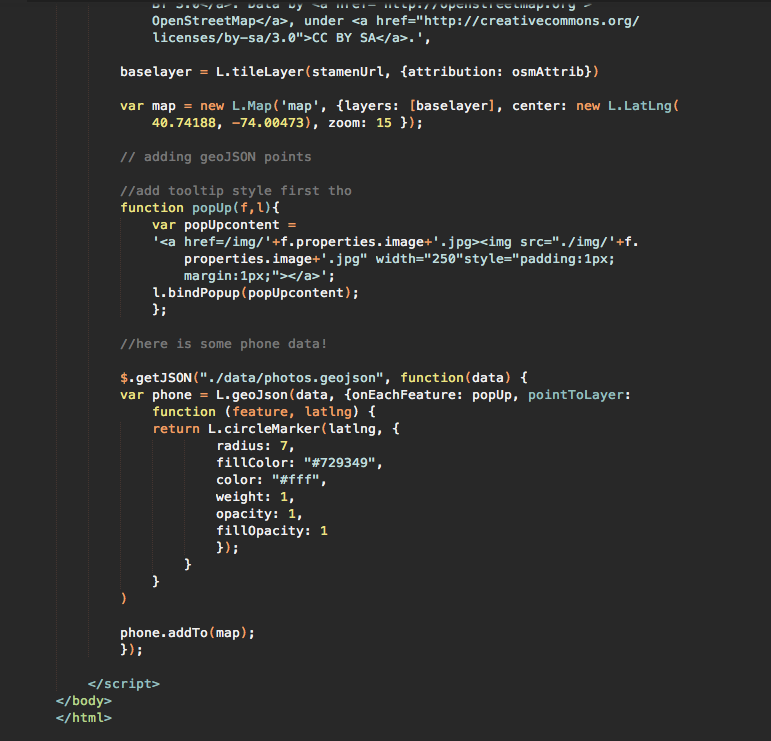
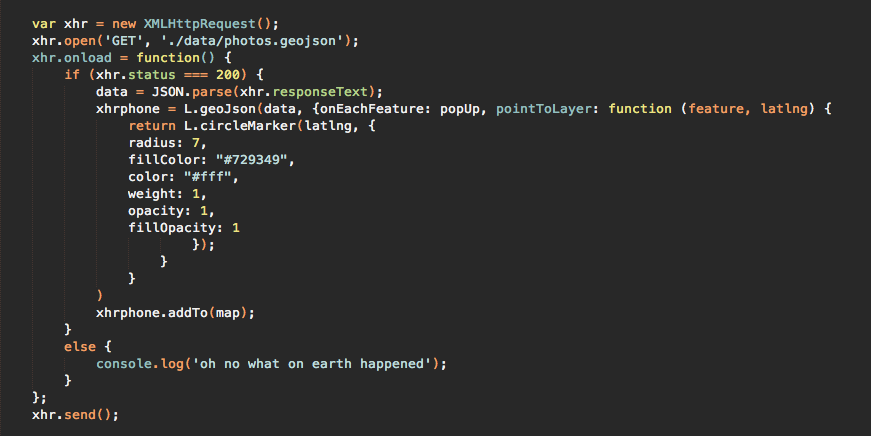
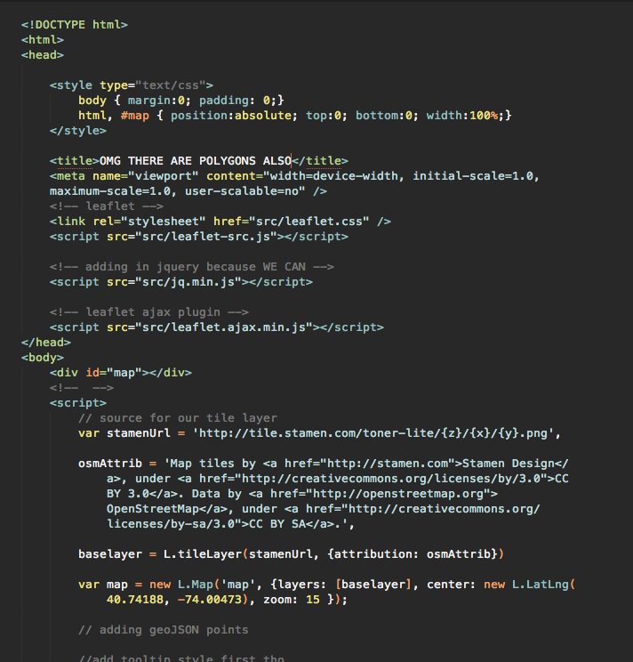
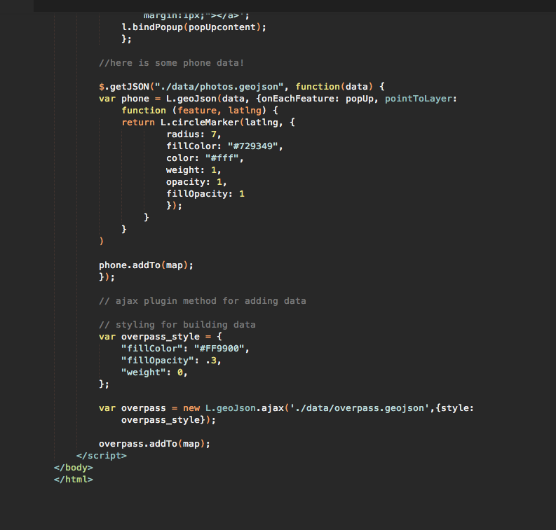

hello world
adding static geojson files as layers in Leaflet
there are lots of ways
here are some real lazy easy ones
basically it's just an ajax request
boring ol' vanilla javascript
jQuery $.getJSON
The magical world of Leaflet plugins


a cool trick
for locking you in
to a platform as a service
anyway
let's add some points to a map



adding polygons


so that happened
there were probably easier ways
and these tools have shortcomings
projections!
we can and should really talk about d3
also exciting weird webGL stuff
static geojson does not always scale
but the point is
now we know how a web map works
how to put one together
and how to find/create data for it
questions?
thank you!!